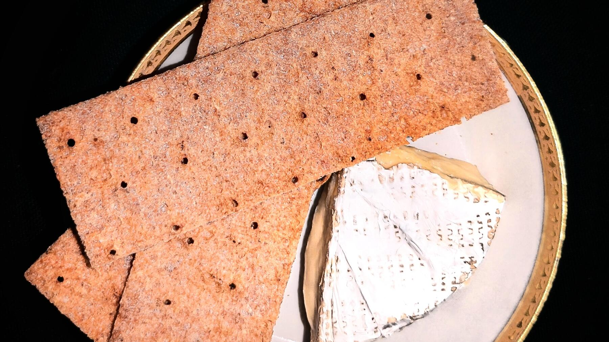

Zurück zur Übersicht
Knusprige Sauerteigcracker
Eine gute Verwendung für Reste vom Anstellgut: hauchdünn ausgerollt, mit Saaten und knusprig gebacken. Eine Portion entspricht einem Blech.
- Zeit
- 45 Min.
- Schwierigkeit
- leicht
- Kategorie
- Brot & Brötchen
- Ernährung
- vegan
Zutaten
Portionen
- 100 gunaufgefrischtes Anstellgut (Roggen- oder Weizensauerteig)
- 50 gVollkornmehl
- 1 ELÖl
- 2 ELSaaten
- 1 TLSalz
Zubereitung
- Den Backofen auf 175 °C Umluft vorheizen.
- Alle Zutaten zu einem festen, geschmeidigen Teig verkneten und zu einer Kugel formen.
- Zwei Stück Backpapier auf Blechgröße zuschneiden. Die Teigkugel zwischen die beiden Blätter legen, mit der Hand etwas platt drücken und mit dem Nudelholz so dünn wie möglich ausrollen. Der Teig sollte etwa zwei Drittel eines Blechs bedecken.
- Das obere Backpapier abziehen und den Teig mit dem unteren Blatt auf ein Backblech ziehen. Mit einem scharfen Messer oder Pizzaschneider in gleich große Stücke schneiden.
- Die Cracker 25–35 Minuten goldbraun backen und dabei alle 5 Minuten den Dampf aus dem Ofen lassen.
- Wenn die Cracker braun werden, mit dem Finger prüfen, ob sie sich trocken anfühlen. Knusprig werden sie nur, wenn sie so lange im Ofen bleiben, bis sie trocken sind und sich leicht vom Backpapier lösen.
Varianten: Mit 2 EL fein geriebenem Parmesan oder anderem Käse im Teig. Oder mit Kräutern wie Rosmarin, Thymian und Basilikum, Gewürzen wie Chili, Curry, Rauchpaprika und Knoblauchpulver, und Saaten wie Sonnenblumenkernen, Mohn, Sesam, geschroteten Leinsamen oder Kürbiskernen. Als Mehl geht, was gerade da ist. Mit Keksausstechern ausgestochen sind sie ein nettes Mitbringsel.
Tipp: Die Nachwärme nutzen und die Cracker direkt nach einem Brot backen, dann ist der Ofen schon heiß.